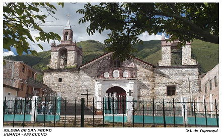

Luricocha
PUEBLO TRADICIONAL DE LURICOCHA
Luricocha es, en importancia, el primer distrito de la Provincia de Huanta, del Departamento de Ayacucho. Está ubicado al norte del Distrito de Huanta, Región de Ayacucho a una altura de 2564 msnm. Limita por el norte con el Distrito de Santillana, por el sur con el Distrito de Huanta y Huancavelica, por el este con la provincia de Huanta y por el oeste con el departamento de Huancavelica. Por su variabilidad climática, su biodiversidad y la conservación de sus recursos naturales es, por excelencia, el distrito ecológico y frutícola de la Región, con tradiciones, su actividad agropecuaria, comercial, etc. Aquí el hombre aún vive en armonía con la naturaleza, cuenta con la infraestructura básica y de comunicaciones indispensables, de tal forma que el turista nacional como extranjero, pueda sentirse como en casa.


FESTIVAL DE LA PALTA
El distrito de Luricocha en Huanta, considerado actualmente como el primer productor de paltos a nivel nacional, con 23 variedades como fuerte, súper fuerte, nacional, linda, familiar, carioca, gigantón, mexicana, santillana, hass, entre otras, alista el XVI Festival de la Palta y Tradicional Fiesta de las Cruces. Comunmente el festival de la palta inicia el 30 de abril y culmina el 3 de mayo.MIRADOR DE HUAYRAMOLINO
El mirador de Huayramolino se ubica en el distrito de Luricocha, en la provincia de Huanta, está ubicado en la parte alta de un cerro que tiene una mirada espectacular a los 360º, desde ahí se puede observar terrenos con cultivos de la zona. Existe una carretera de ingreso que conduce hasta el mismo lugar del mirador. Es un mirador natural que cuenta con infraestructura de calidad para una cómoda pasantía, tiene un área aprox. de 11 hectáreas, óptima para viveros de paltos, chirimoyas, ciruelo, granadillas e injertos de lúcuma, también se cuenta con reproducción de cuyes. Huayramolino es un centro de capacitación de cultivos andinos, convertida hoy en atractivo turístico por su ubicación y por los trabajos que se realizan, lugar que recrea un lugar de aventura, paseos campestres, caminatas, relajamiento, turismo educativo y de investigación. Huayramolino es un enclave natural que permite al turista gozar de una vista natural y de cómodas pasantías.

MIRADOR NATURAL DE HUATUSCALLE
Ubicado en el distrito de Luricocha, a 30 min en auto desde la Plaza de Armas de Huanta. El cañón de Huatuscalle es atracción principal de esta zona, por contar con el pico de mayor altitud de Luricocha que permiten los valles, Cuencas y quebradas se forman verdaderas obras de arte que invitan de al solaz, a la tranquilidad y por supuesto a la práctica del ecoturismo. Los cañones, cumbres, ríos y riachuelos, flora y fauna armonizan escenas paisajísticas simples y llanamente idílicas. Desde el mirador de Huatuscalle se observa cómo se entretejen las tres brillantes hebras de los ríos Cachi, Urubamba y Mantaro, dos provenientes de Ayacucho y uno de Huancavelica.

PARROQUIA SAN ANTONIO DE PADUA LURICOCHA
Arquitectura colonial, por su belleza arquitectónica, extensión y por su solidez de estilo barroco, gótico admirado por propios y forasteros.Festividades
YARQA ASPIY
Yarqa Aspiy”, es una actividad comunal de trabajo cooperativo, enfocado en la limpieza de las acequias principales de la captación de agua de regadillo. Esta labor se realiza en las bocatomas de los ríos Chamana pata, Parisa y Lúcuma pata. Octubre es el inicio de la temporada de lluvias, que coinciden con las labores comunales de limpieza de las acequias matrices. Esta es convocada por la autoridad comunal, a donde asisten todos sus integrantes, caso contrario, podrían perder la dotación de agua de regadío por todo el año. Las actividades recreativas también están consideradas, la corrida de toros, el baile de los negritos, los tocadores de antaras, danzantes de tijera, conjuntos musicales y conjunto de banda de músicos. Por su parte las mujeres se encargan de proveer suficiente chicha de jora, molle y abundante comida. El trabajo es duro, el tambor y el bombo marcan el ritmo de las acciones. Se escuchan gritos de ánimos, cantos de mujeres que ensalzan el esfuerzo varonil. ¡Dale duro, fulano de tal!. no te quedes detrás!. Troncos y piedras desaparecen para dejar libre el canal que conducen el agua el agua vivificar las parcelas sedientasFESTIVAL DE LA PALTA
la festival de palta en el distrito de Luricocha, ubicado en la provincia ayacuchana de Huanta, exponen desde hoy su producción más selecta como parte de la decimoquinta edición del festival nacional del fruto que se realiza desde la víspera en la plaza de Armas local. Los productores han instalado sus stands en la plazuela hasta donde llegan numerosas personas para participar en la feria y la tradicional Fiesta de las Cruces que se efectuará mañana martes en el distrito huantino. Además de ofrecer platos elaborados a base de palta, los expositores venden comidas típicas como el picante de trigo, pucapicante, el puchero y otras.Luricocha es el primer productor de palta a nivel nacional y posee 23 variedades, entre ellas la nacional, súper fuerte, carioca, mexicana y santillana que, en su mayoría, son exportadas a España, Francia, Canadá, Estados Unidos y Chile.Comúnmente el festival de la palta inicia el 30 de abril y culmina el 3 de mayo.


FIESTA PATRONAL DE LAS CRUCES
El pueblo huantino, también se apresta a celebrar la tradicional Fiesta de las Cruces, al igual que el mundo católico celebra durante todo mayo la Fiesta de la Cruz. El 3 de mayo se conmemora el supuesto hallazgo del madero donde fue crucificado Jesús. Con el traslado de unas 40 cruces de diversas comunidades y portando más de 300 crucifijos de varios tamaños, los pobladores del distrito de Luricocha, en la provincia de Huanta, y campesinos de las zonas altas de Ayacucho participan en ésta tradicional Fiesta Durante la actividad religiosa sobresalen las cruces tutelares de Huatuscalla y Pachapunya, esta última mide unos cinco metros de largo y se encuentra ubicada en la zona más alta del distrito de Luricocha y es considerada la más representativa.